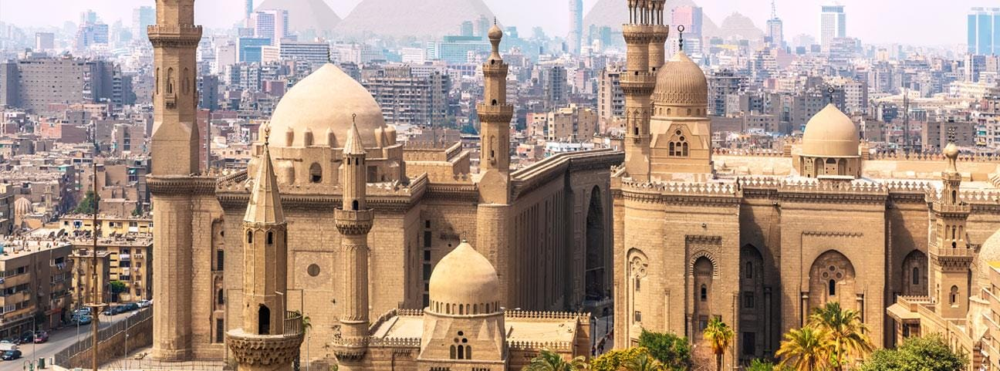
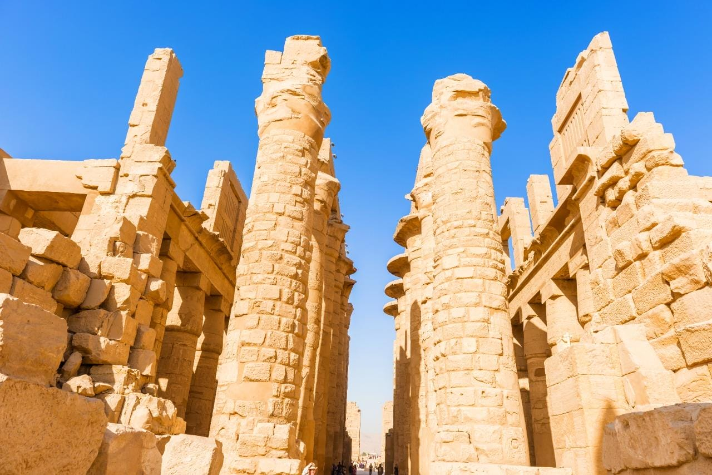
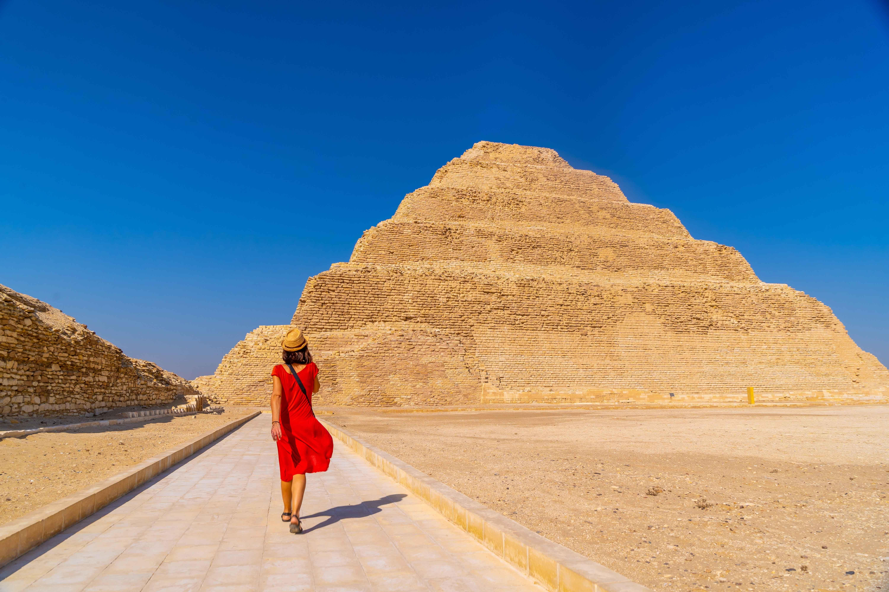
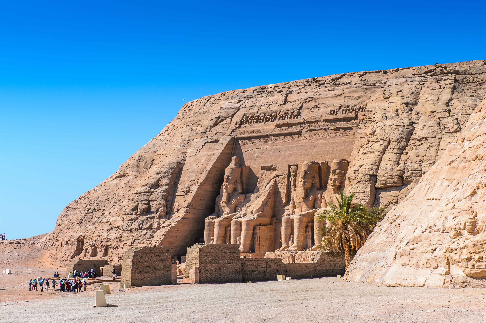
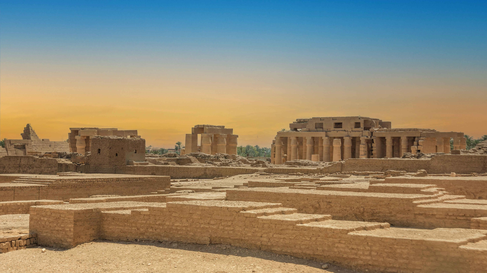
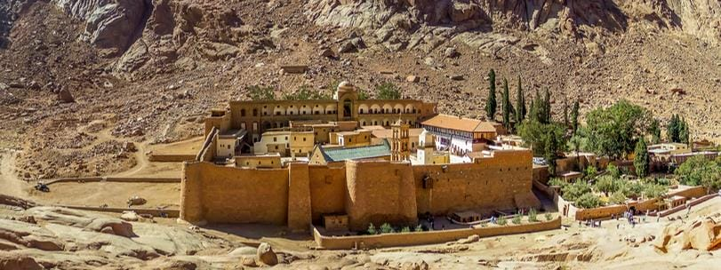
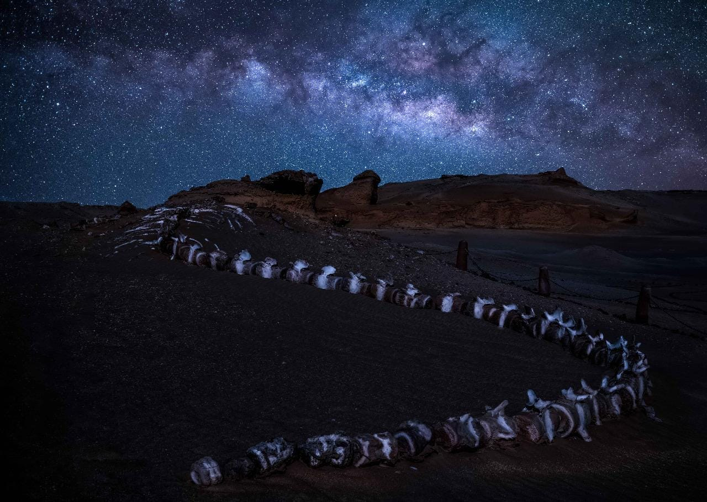

Egypt is home to seven spectacular UNESCO World Heritage Sites, where visitors can immerse themselves in ancient cultural legacy protected throughout the ages. Each location has several important structures and features to discover, guaranteeing a breathtaking experience and memories to cherish for a lifetime

Founded in the 10th century and flanked by the modern architecture of contemporary Cairo, this ancient Islamic city is brimming with stunning mosques, madrasas (Islam-centered schools), hammams (baths), and fountains. It also includes an array of houses and wekalas.

Once the capital of Egypt during the Middle and New Kingdoms, the ancient city of Thebes—now called Luxor—includes the temples of Karnak and Luxor and the royal temples on the west bank, along with the different necropolises, the most famous of which is the Valley of the Kings with the Tomb of Tutankhamun. Don’t miss the Valley of the Queens, especially the stunning Tomb of Nefertari, as well as the Tombs of the Nobles, and the ancient Egyptian workmen's village, Deir al-Medina.

Located south of the modern heart of Cairo, the ancient capital of Memphis was the longest active capital in ancient Egypt. Its strategic location enabled it to keep its role throughout history. The most visible remains of the town are its necropolises, which encompass the Giza Pyramids, Saqqara Pyramids, and Dahshur Pyramids, as well as many private tombs in rectangular superstructures called mastaba. Let’s not forget the Sphinx that overlooks and guards the area.

Nubia, located in the south of Egypt, contains ancient archeological sites with magnificent monuments, such as the Temple of Isis at Philae and the colossal rock-cut Temple of Rameses II at Abu Simbel.

Built over the tomb of the martyr Menas of Alexandria, this archeological site is home to a church, a baptistry, basilicas, public buildings, streets, monasteries, houses, and workshops that have remained visible since their foundation in the 4th century.

This area has been a natural protectorate since 1996, and it is considered a holy site to the three Abrahamic faiths: Judaism, Christianity, and Islam. Its famous monastery, the Orthodox Monastery of St. Catherine, is situated midway to the summit of Mount Sinai. It is considered the oldest active Christian monasteries in the world.

Located in the Western Desert of Egypt, Wadi al-Hitan is a natural UNESCO World Heritage Site and home to the well-preserved fossils of an extinct suborder of whales, the archaeoceti. These fossils corroborate the theory that whales evolved from land mammals to sea mammals